84旧版映照scene公版✓ 判官过审无论你的生活多烂，先把它活一遍再说
🎬 梭罗说：无论你的生活多么卑微，直面它，活出来。
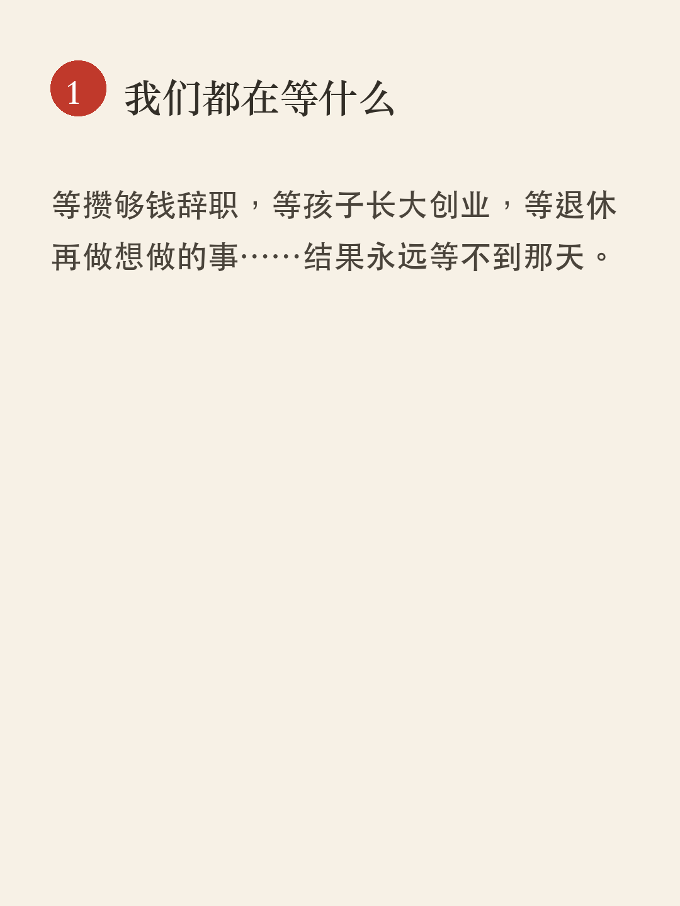
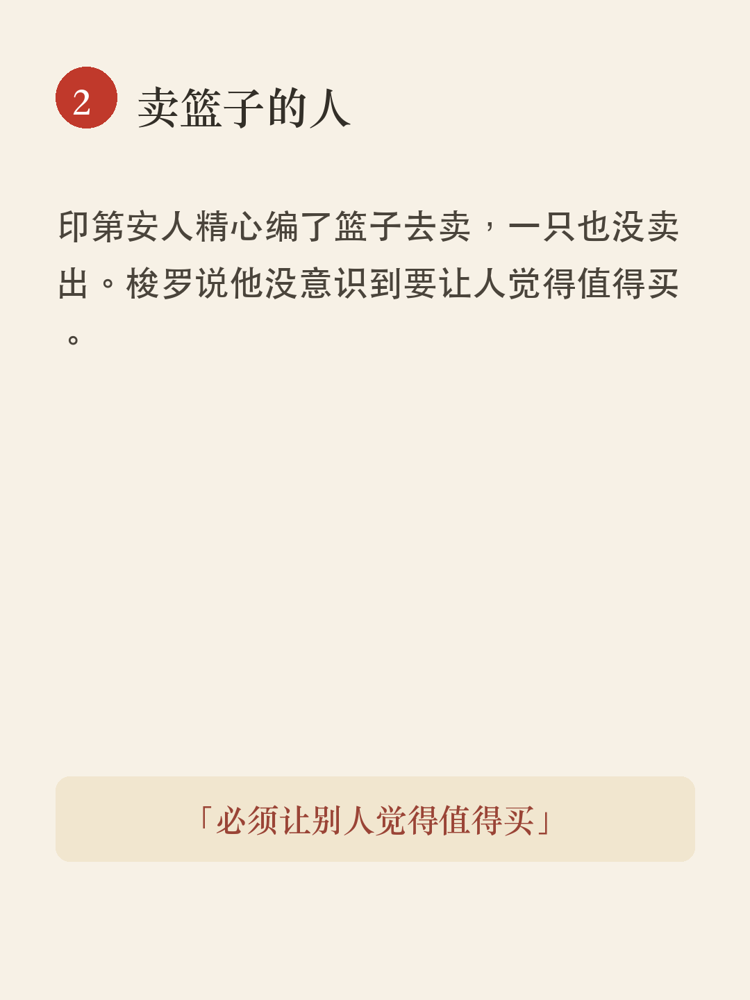
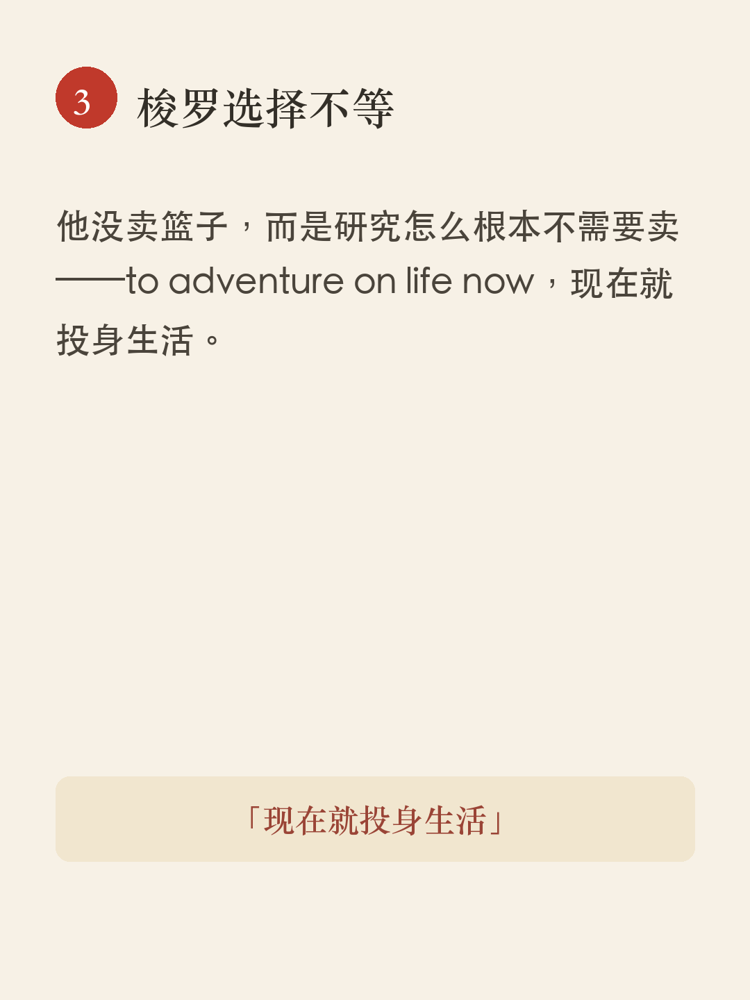
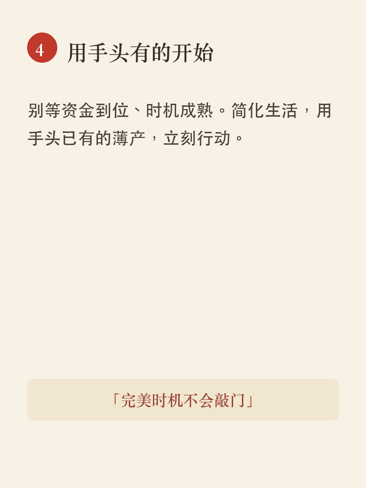
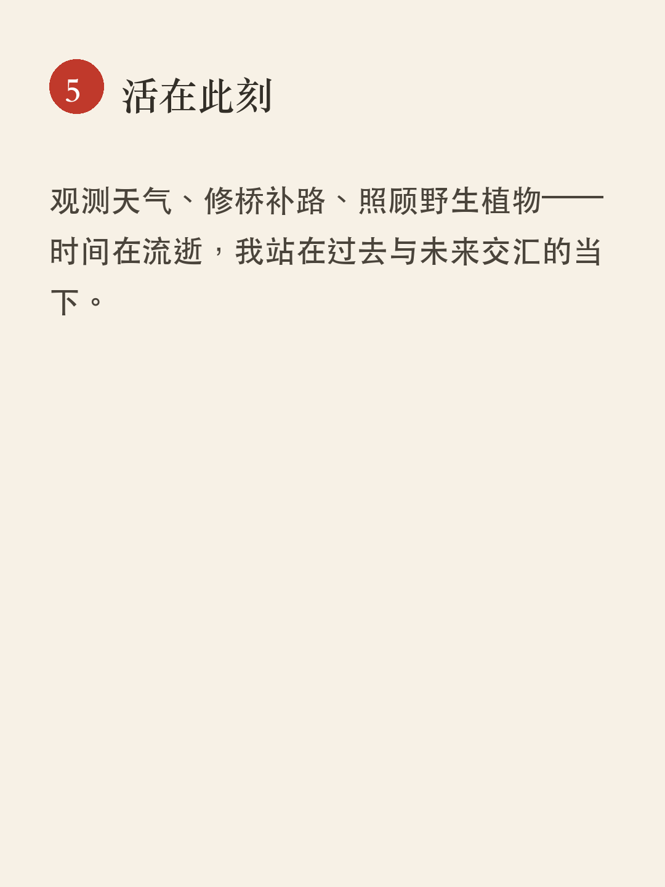
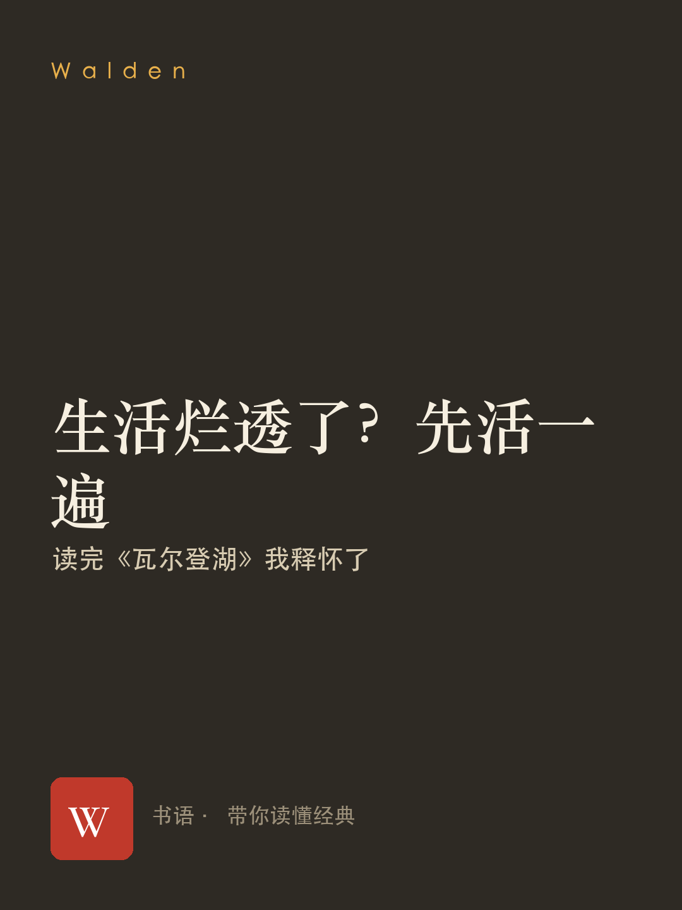
📄 配文·钩子（不剧透）
读完《瓦尔登湖》我才明白：不是等生活变好了才活，是活着才能让生活变好。完美时机从来不会敲门，它只在你不经意推门的瞬间出现。别再编织等别人来买的篮子了，用你手里现有的，去做真正想做的。口播稿全文
你有没有发现，我们这代人最擅长的事，就是"等"？
等攒够钱就辞职。等孩子长大就创业。等退休了就去做那件想了很久的事。等生活变好了，就……好好活一次。
梭罗在《瓦尔登湖》里讲了一个特别扎心的故事。一个印第安人去一个律师家卖篮子。"您买篮子吗？""不买。""什么？你打算饿死我们吗？"这人看了邻居靠卖嘴皮子就能过上好日子，心想：那我也会，我去编篮子。编完了，肯定有人买。结果呢？他在律师家连一只都没卖出去。
问题出在哪？梭罗评论说，印第安人没意识到必须让别人觉得值得买，或至少让对方以为值得。
但梭罗紧接着说了一句更扎心的——他也有过类似的经历。他也编过"精致纹理"的篮子，但他没有试图让它们"值得买"，他研究的是怎么根本不需要卖篮子。
这个故事戳中的，恰恰是今天无数人的痛：我们总觉得要"准备好了"才能开始。要等时机成熟，等条件具备，等手头宽裕，等孩子长大，等退休……
梭罗的态度就一个字：不等。
他说，当一个人获得了生活必需品之后，除了继续追逐奢侈品，还有另一个选择——"to adventure on life now"——现在就投身生活。
他决定立刻行动，不再等待筹集"通常的资本"，而是用手头已有的薄产。他去瓦尔登"不是为了在那里过得便宜，也不是为了在那里过得昂贵"，而是为了以最少障碍处理私事——被这点常识和进取心的欠缺耽误，与其说是悲哀，不如说是愚蠢。
这段话击碎了一个幻觉：我们以为必须"先有A才能做B"。但梭罗说，关键不在于等钱，而在于在简化生活的前提下，用手头已有的薄产立即行动。
材料里还有一段，讲他那些年都在忙什么：观测暴风雪和雨天，测量森林小径，修桥补路，照看镇上的野生牲畜与野生植物，给红越橘、沙樱、朴树、白葡萄、黄堇浇水——"否则干旱时可能会枯萎"。
这是最朴素的"活在此刻"：不管什么天气，不管白天黑夜，时间一分一秒地过去，而我站在那个交汇点上——过去的永恒和未来的永恒交汇的那个点，就是当下这一刻。我就在这。
所以答案很简单：不是等生活变好了才活，是活着才能让生活变好。
不需要等一件新衣服。不需要等资金到位。不需要等那个"完美时机"——因为完美时机从来不会来敲门，它只在你不经意推开门的那个瞬间出现。
所以别再编织那些等别人来买的篮子了。用你手里现有的，去做你真正想做的。
82旧版洞见scene公版✓ 判官过审简化到极致：你根本不需要那么多东西
🎬 梭罗喊了三遍：简化！简化！再简化！然后他用两年证明这是真的。
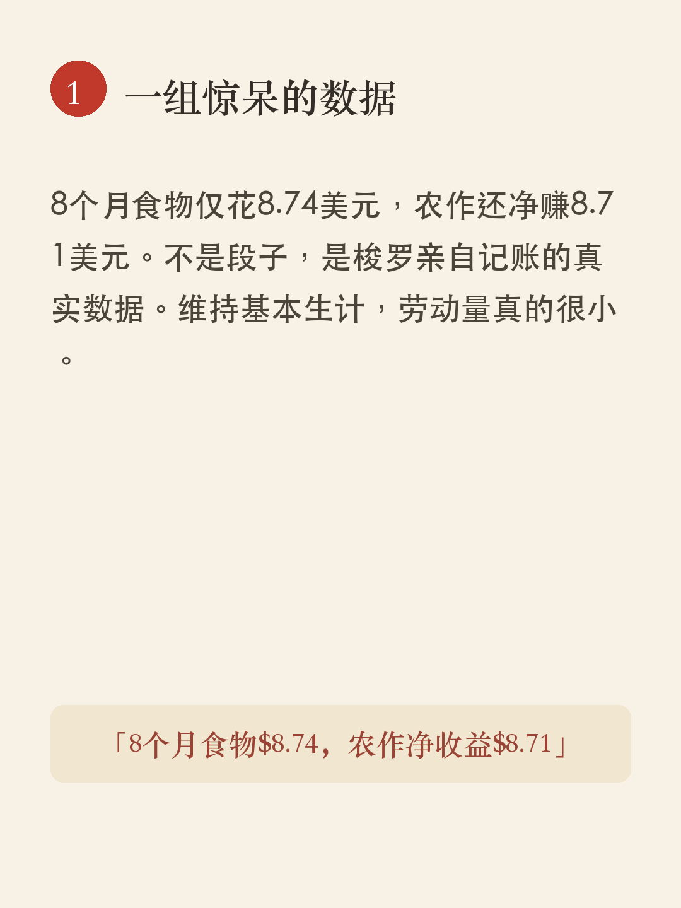
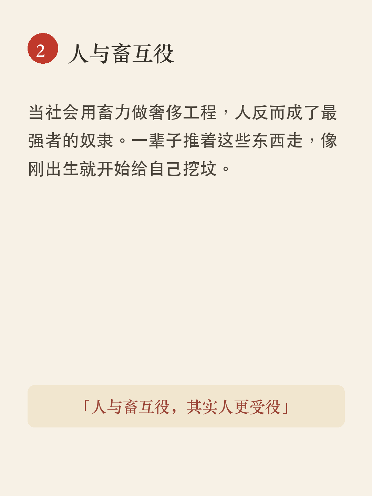
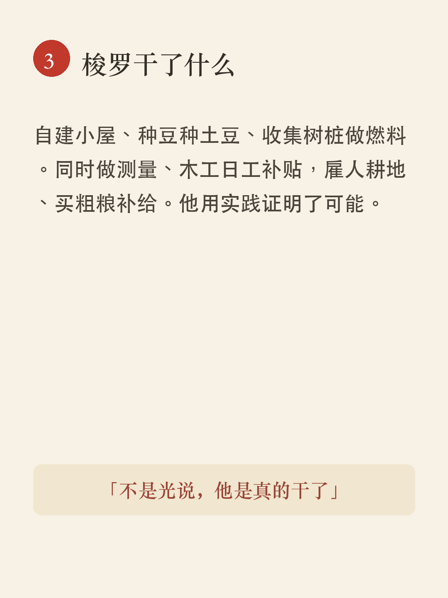
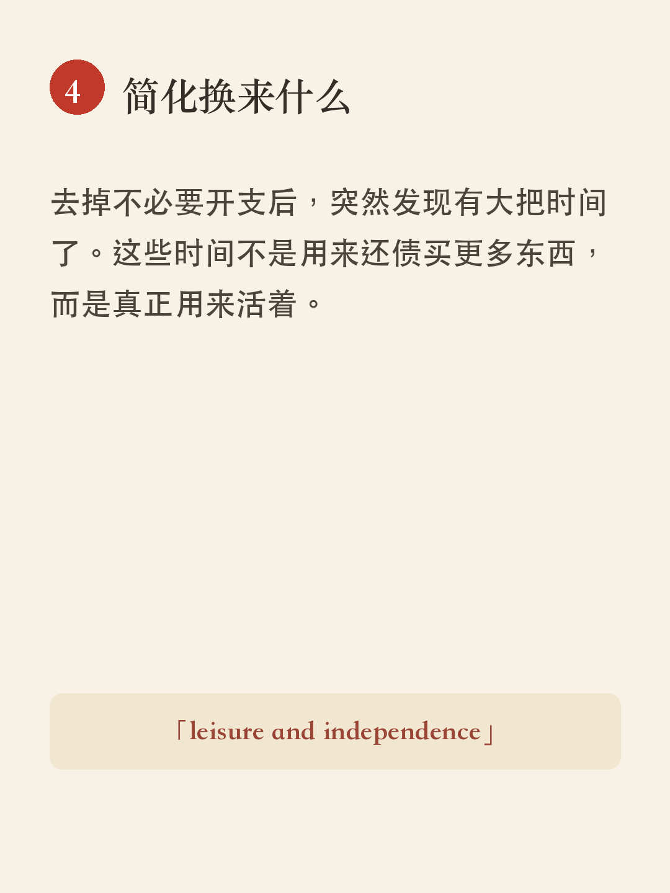
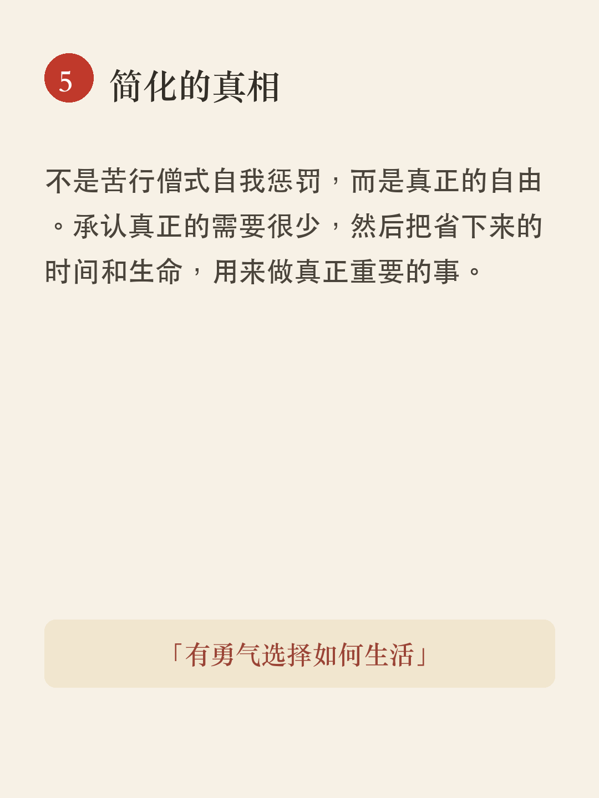
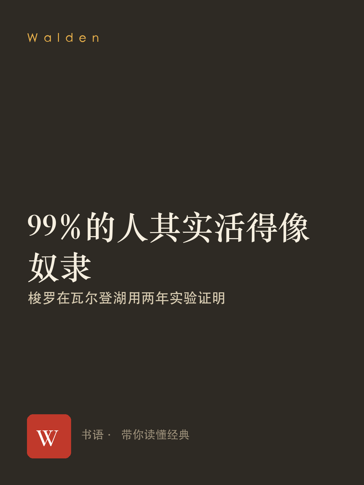
📄 配文·钩子（不剧透）
今天被一句话击中："人与畜互役，其实人更受役。"
你以为必须拼命工作才能活下去？梭罗在瓦尔登湖边用两年实验打了所有人的脸——8个月食物才花8.74美元，农作还倒赚。他自建小屋、种豆子、收集燃料，同时打日工维持。不需要苦行，不需要放弃，而是用实践证明：你真的不需要那么多东西。
当你去掉所有不必要的开支，房子不用大、衣服不用多、吃饭不用精致，你会发现时间突然回来了。这些时间不是用来还债、不是用来买更多东西，而是真正用来活着。
简化不是放弃生活，而是有勇气选择如何生活。口播稿全文
你以为必须拼命工作才能活下去？梭罗用在瓦尔登湖的两年实验表明，如果大幅简化需求与开支，维持基本生计所需的劳动量很小。
他在瓦尔登湖边独自生活了两年多。他自建小屋、种豆并收集树桩和漂木作燃料；同时持续做测量、木工等日工补贴收入，购买米、糖浆、粗粮、油等日用品。八个月食物开销$8.74，农作净收益$8.71½。
而他同时代的人在做什么呢？当社会用畜力去做奢侈与闲逸的工程时，一些人会成了最强者的奴隶。梭罗写道："人与畜互役，其实人更受役。"他们一辈子推着这些东西往前走，就像一个人刚出生就开始给自己挖坟墓。
你听到了吗？不是人在役使畜生，是人被畜生所役使。
但他不是光说，他是真的干了。他自己盖房子，自己种豆子、种土豆、种豌豆，也用树桩和漂木做燃料。并不是所有事情都独自完成——他雇人耕地，去镇上做日工，购买糖浆、粗粮等补给。但他用自己的实践证明：通过简化不必要的开支，你需要的真的没有那么多。
结果呢？他用两年证明：当你去掉所有不必要的开支，你需要的真的没有那么多。房子不用很大，衣服不用很多，吃饭也不用多精致。当你把这些都简化之后，你突然发现自己有大把时间了。这些时间不是用来还债、不是用来买更多东西，而是真正用来活着。
所以梭罗说的简化是什么？不是苦行僧式的自我惩罚，而是一种真正的自由。他用自己两年的经历和账目说明，简化生活可以换来"leisure and independence"——闲暇与独立。
当你成为自己财产的奴隶，你就不自觉地用一辈子的时间换取一堆会生锈、会发霉、会消失的东西。但梭罗的两年告诉我们：你不必被畜力和奢侈品所役使，不必用一辈子的时间换取一堆会生锈、会发霉、会消失的东西。简化，是承认真正的需要很少，然后把省下来的时间和生命，用来做真正重要的事。
这才是简化真正的意义——不是放弃生活，而是有勇气选择如何生活。
81旧版映照scene公版✓ 判官过审你买的那件东西，其实花了多少条命？
🎬 一样东西值多少钱？梭罗说别看价格，要看你为它搭进去多少条命。
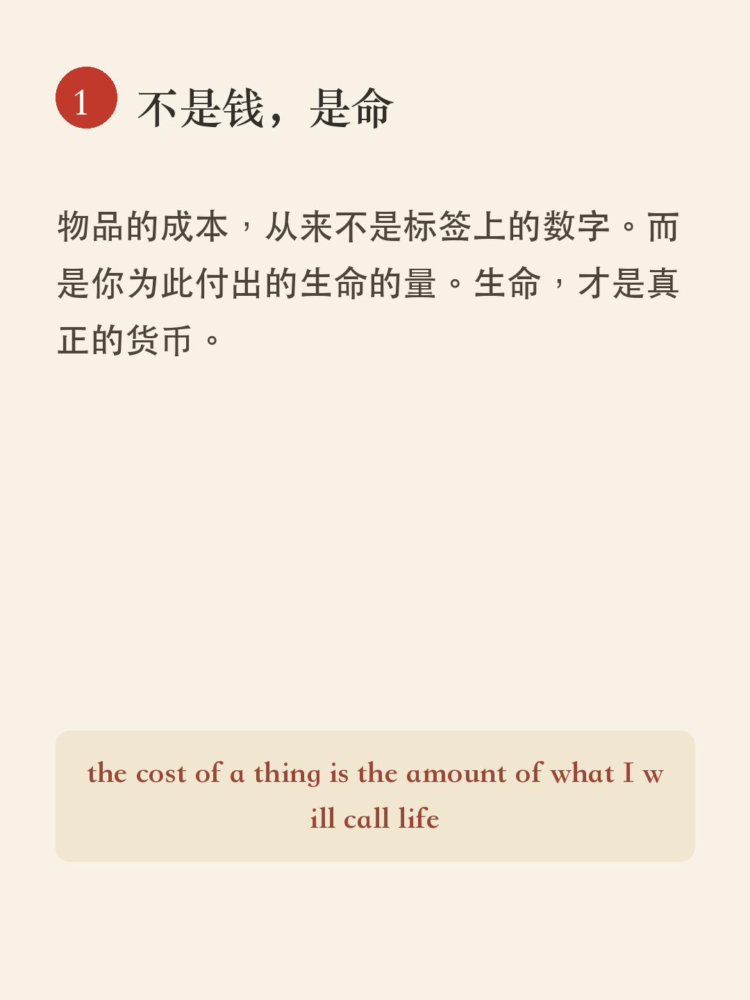
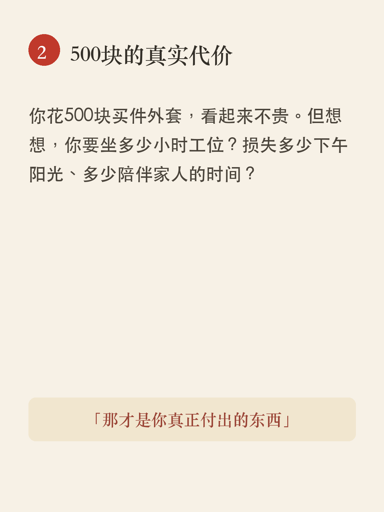
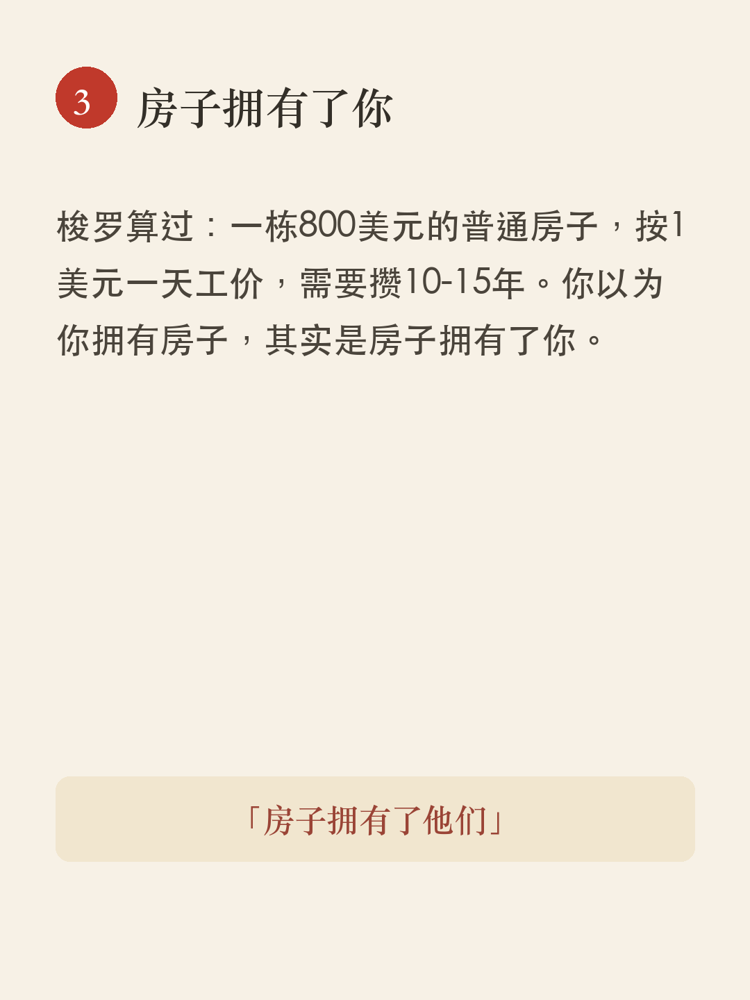
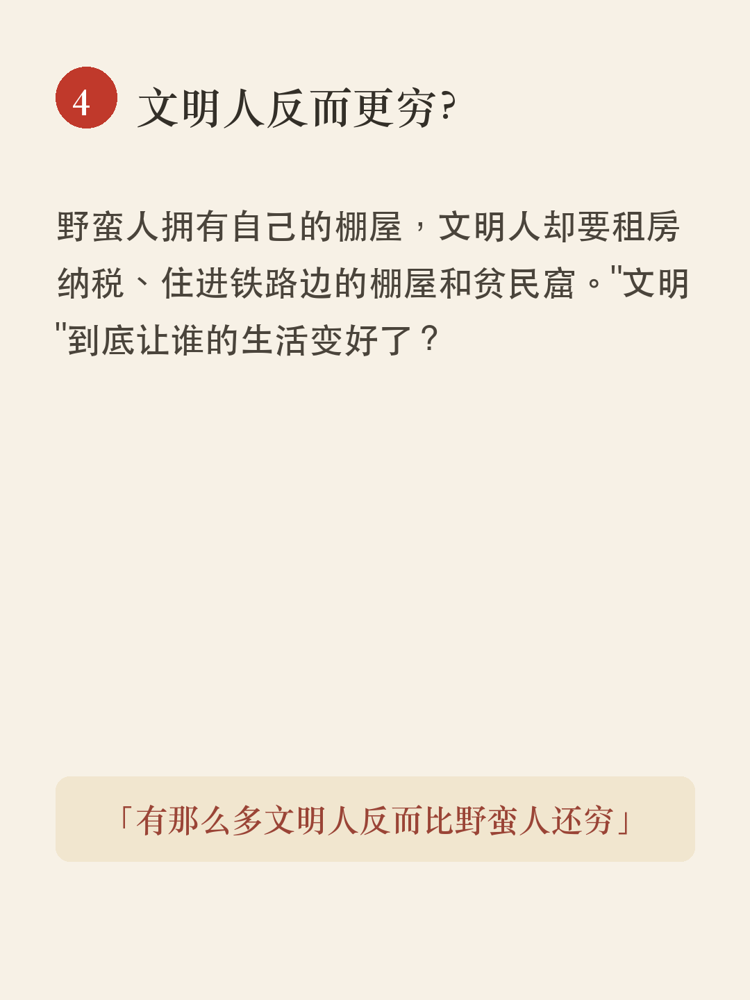
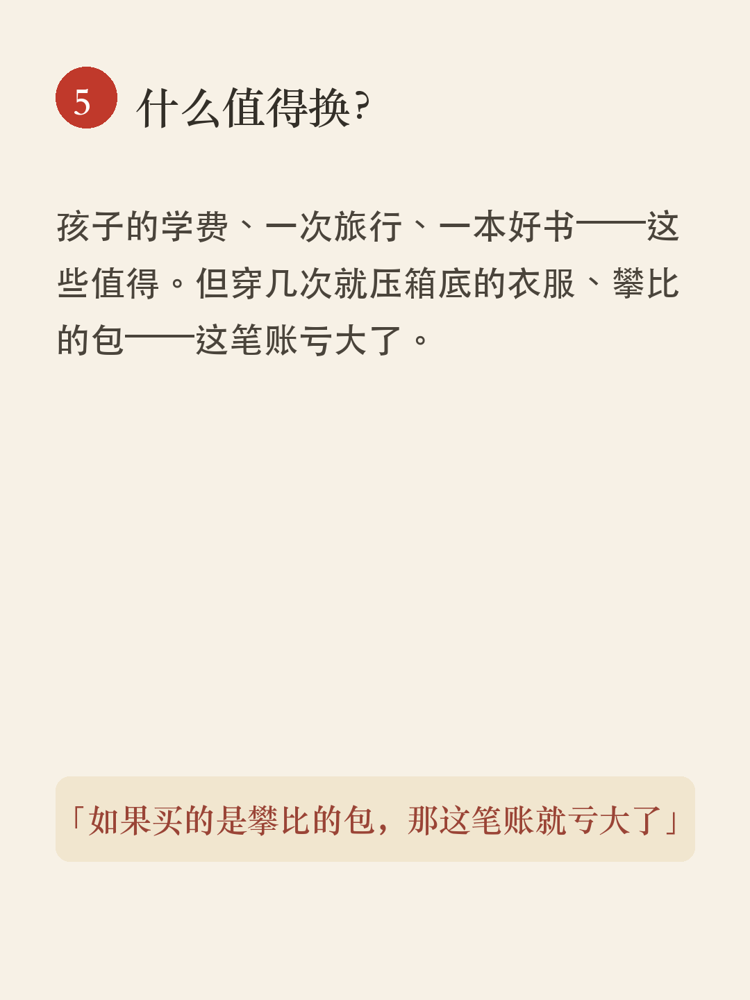
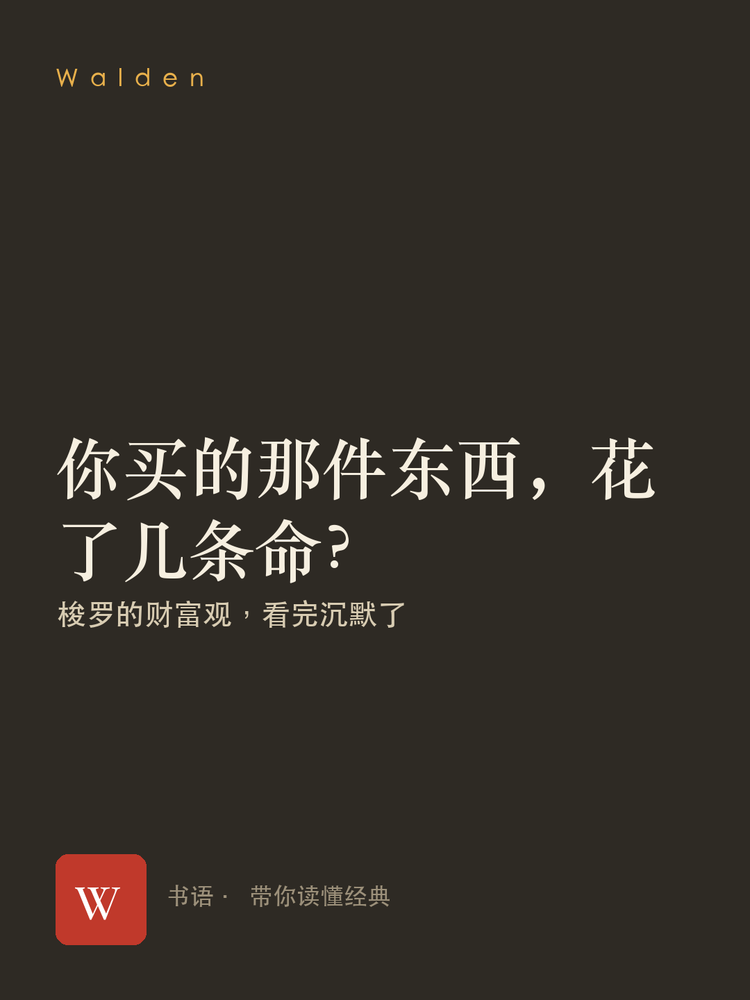
📄 配文·钩子（不剧透）
梭罗说：一件东西的成本，是你用生命去换的那个量。
花500块买外套，看起来不贵。但你想过没，为了这500块，你要坐多少小时工位？损失多少阳光、多少陪伴家人的时间？
他还算过：一栋800美元的房子，需要攒10-15年。你以为你拥有房子，其实是房子拥有了你。
真正的富有，不是你拥有多少东西。而是你的生命，花在了什么地方。
下次付款前，问问自己：这个东西，我要用多少生命去换？口播稿全文
你有没有算过，你买那件东西，到底花了多少条命？
不是花多少钱。是花多少条命。
梭罗在瓦尔登湖边算过一笔账。他说，一件东西的成本，不是标签上的数字，而是你为此付出的生命的量。他的原话是——
"the cost of a thing is the amount of what I will call life which is required to be exchanged for it, immediately or in the long run."
一件东西的成本，是你用生命去换的那个量，无论那是立刻发生的还是长期累积的。
这句话值得停下来想想。你花五百块买件外套，看起来不贵。但你想想，为了这五百块，你要在工位上坐多少小时。你损失了多少个下午的阳光，多少次可以陪孩子、读书、发呆的时间。那些时间，才是你真正付出的东西。
梭罗还算过一笔更具体的账。本地一栋普通房屋大约八百美元，按一美元一天的工价算，需要十到十五年才能攒下这笔钱。他说，一个劳动者，哪怕没有养家，要积攒这笔钱，也得花掉大半辈子。这才是"文明人"真正的问题——他们以为自己拥有了一栋房子，实际上，是房子拥有了他们。
但问题不只是钱。问题是你为了赚钱买这件东西，放弃了什么。
梭罗指出一个奇怪的现象：野蛮人的棚屋虽然简陋，但每个人都能拥有；而在所谓的文明社会，多数人不拥有住房，需要支付年度税来租住。其中一部分人的居住条件非常恶劣——铁路边的棚屋像猪圈，贫民救济所里住满了人。但即便住进了宽敞公寓、刷了干净油漆的租房者，也往往一生都陷于贫困。他问道：如果"文明"真的让人的生活变好了，为什么有那么多文明人反而比野蛮人还穷？
他并不是要我们拒绝一切物质，而是让我们问自己：这个东西，我要用多少生命去换？划算吗？
也许你会说，有些东西值得我用生命去换。比如孩子的学费，比如一次旅行，比如一本好书。那没问题。
但如果你买的是一件穿几次就压箱底的衣服，一个为了跟同事攀比才想要的包，那这笔账就亏大了。
真正的富有，不是你拥有多少东西。而是你的生命，花在了什么地方。
80旧版映照scene公版✓ 判官过审别找了，天堂就在你脚下——只要你抬头
🎬 梭罗说：天堂不仅在头顶，也在我们脚下。
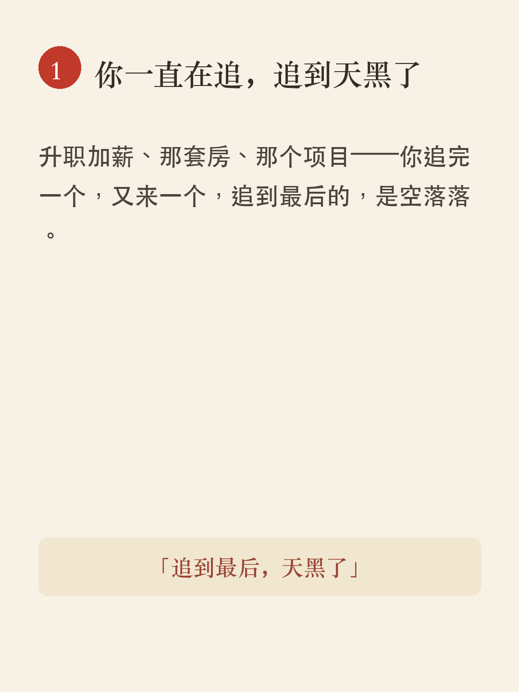
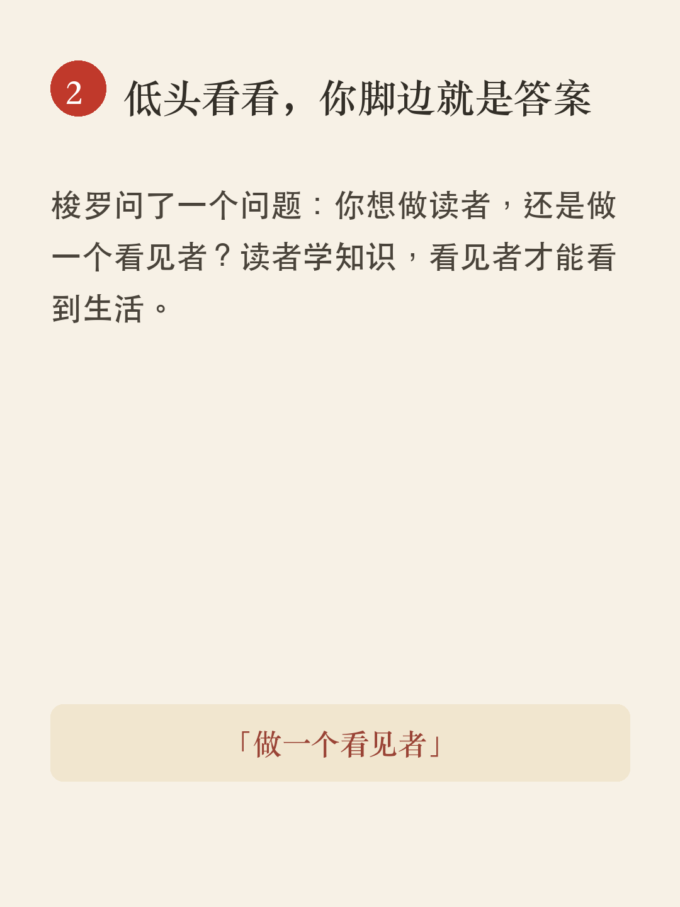
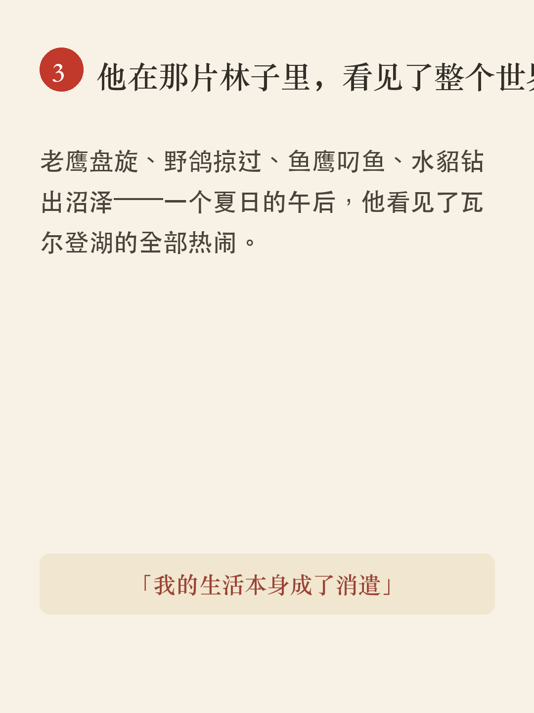
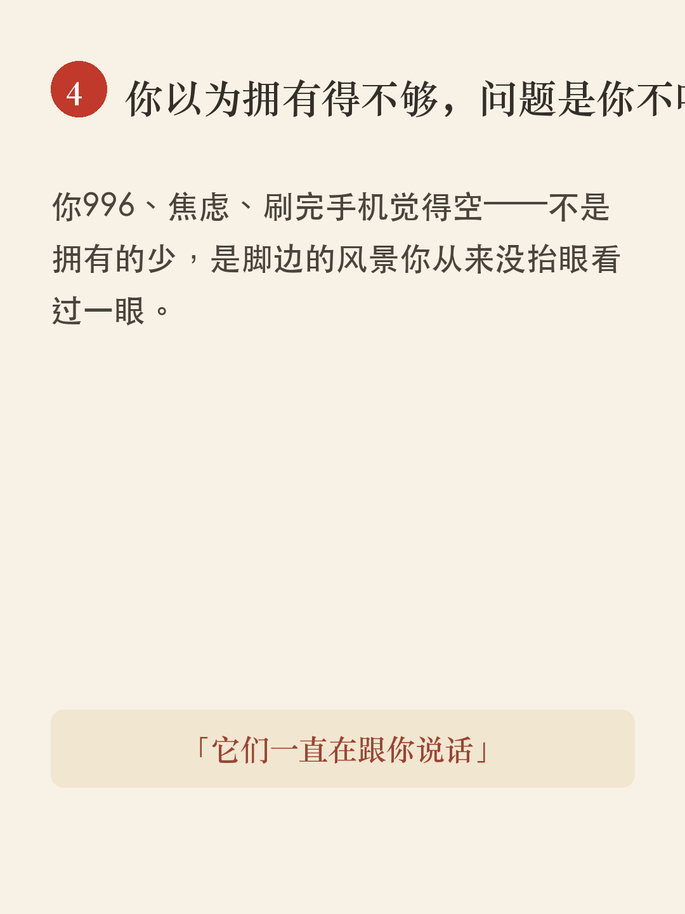
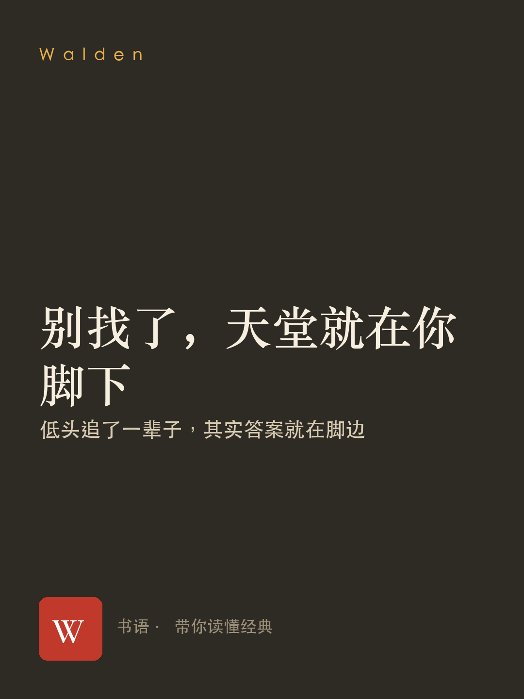
📄 配文·钩子（不剧透）
你跑了那么远，原来天堂就在脚边。梭罗100年前就懂了：幸福不是山顶，不是远方，是此刻你站着的这块地。那条你每天走的街，窗外那棵树，脚边流过的风——它们一直在说同一句话。别追了，抬头看一眼，低头听一耳。你脚下踩着的，就是你要找的地方。它一直都在。口播稿全文
你以为幸福在远方。升职加薪、买到那套房、搞定那个项目、去了那趟旅行——你一直在找，一直在追，追到最后，天黑了。
但你有没有想过，天堂可能不在前面那条路尽头，而是在你脚边，你只是低着头。
梭罗在瓦尔登湖边住的时候，他在书中写道："我的生活本身成了我的消遣，而且从未停止过新鲜感。那是一出有许多场景而没有结局的戏剧。"他还问了你一个问题：你是想做读者，做一个单纯的学习者，还是做一个看见者？
有一天夏日的午后，他坐在窗前。窗外，鹰在他的林地上盘旋，野鸽三三两两掠过他的视野，鱼鹰掠过波光粼粼的湖面叼起一条鱼，水貂从门前的沼泽里钻出来逮住一只青蛙，苇鸟在芦苇间来回飞掠。而远处，铁路的火车声一会儿消失、一会儿又响起，像一只鹧鸪的鼓点，把波士顿的旅人送进这片乡野。
这话放到今天，就是一层窗户纸。你996，你焦虑，你刷完手机觉得空落落的，你以为问题是你拥有的还不够多。但在瓦尔登湖的生活里，梭罗已经给出回答：关键在于时时警觉，直面所见。你每天走过的那条街，你窗外的那棵树，你低头刷手机时从你脚边流过的风——它们一直在跟你说话，说的是同一句话：天堂不在山顶，不在远方，就在你此刻站着的这块地上。只是你从来不听。
所以别再追了。抬头看一眼，低头听一耳。你脚下踩着的，就是你要找的地方。它一直都在。
80旧版映照scene公版✓ 判官过审他花28美元盖了房子，然后故意坐牢去了
🎬 这个人花28美元在湖边盖了房子，然后为了一个政治观点主动把自己送进了监狱，待了一夜。
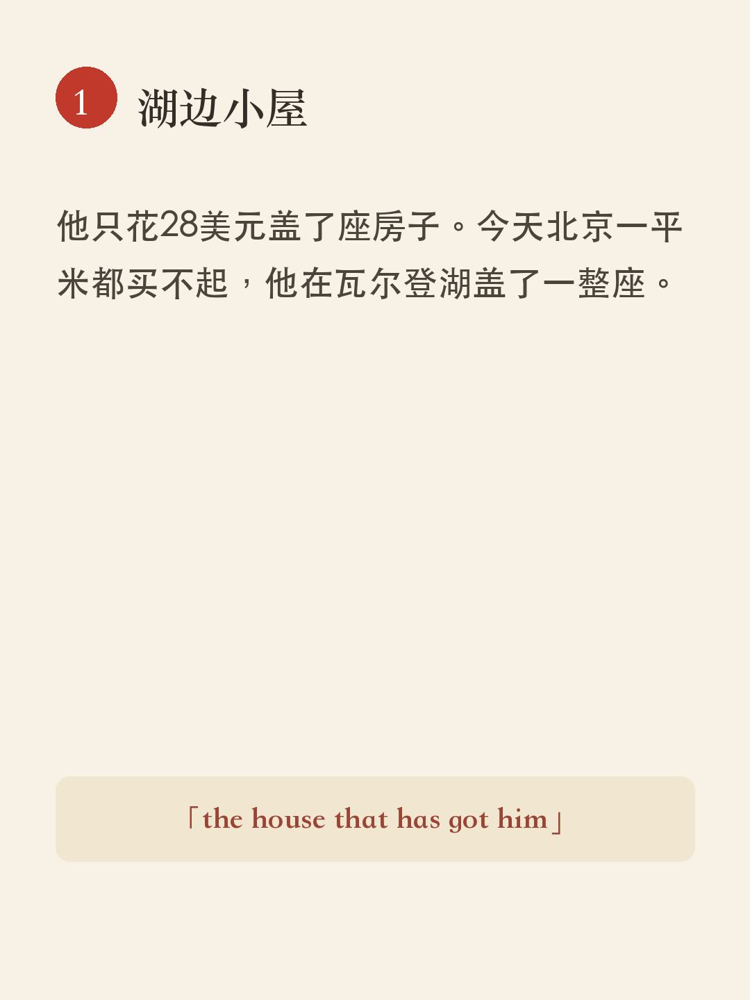
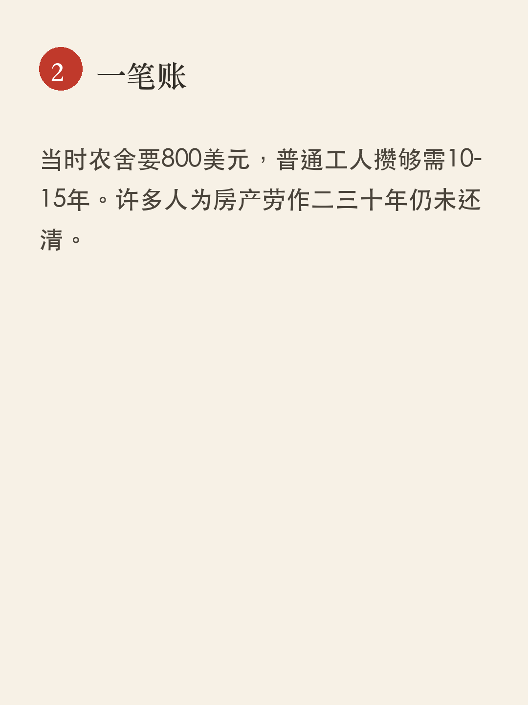
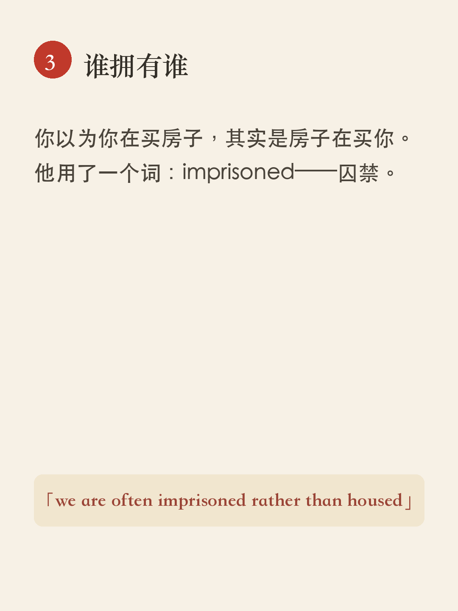
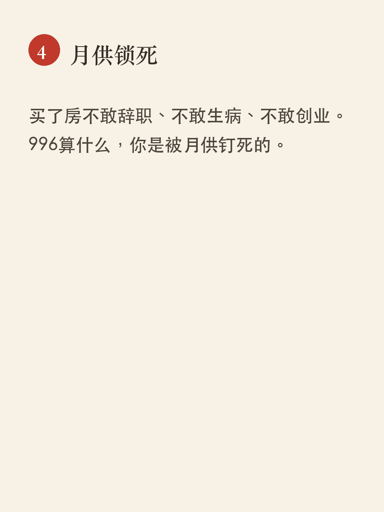
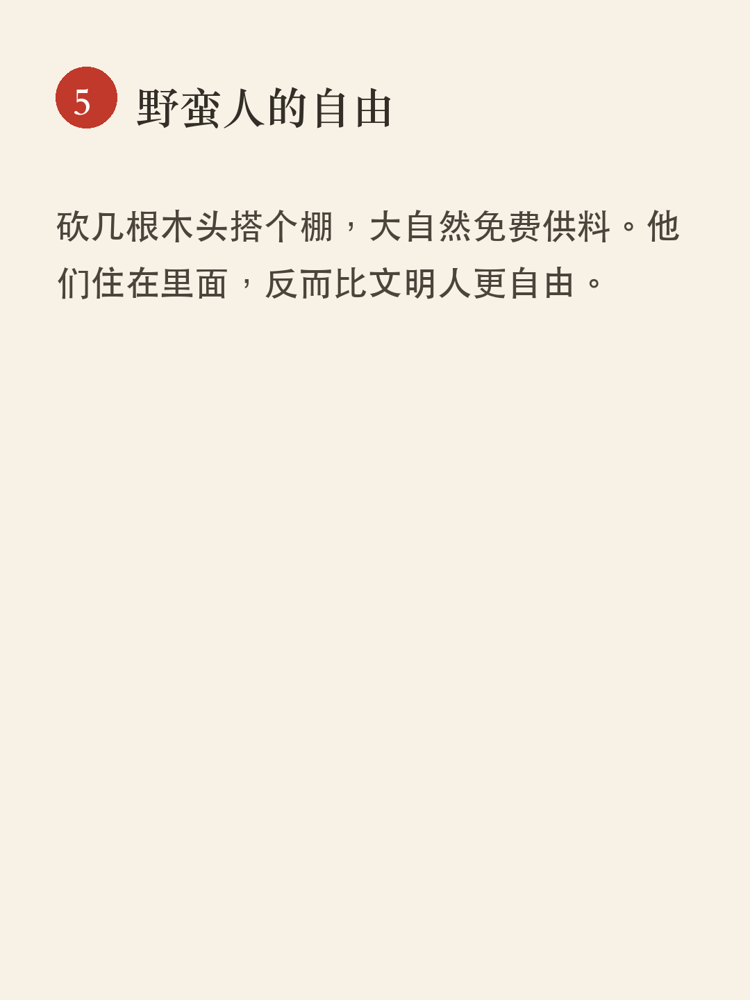
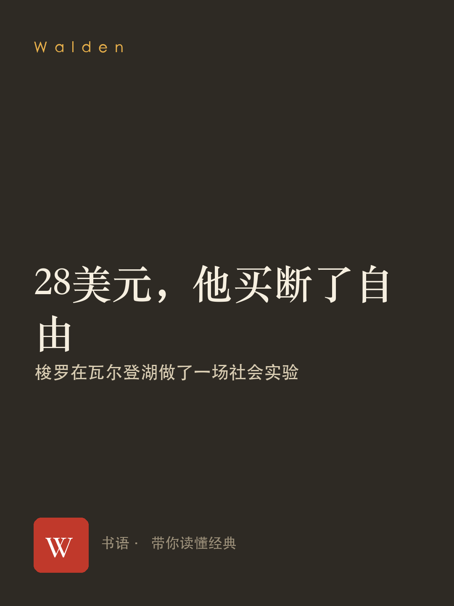
📄 配文·钩子（不剧透）
读《瓦尔登湖》最震撼的一章——梭罗28美元盖了座房子，然后故意坐牢去了。
他算了一笔账：当时农舍800美元，普通工人攒10-15年。他只花28美元，证明了一件事：人对物质的真实需求，远比我们以为的低。
他说了一句扎心的话：我们常常不是被房子"住"着，而是被"囚"在里面。你以为你在买房子，其实是房子在买你。
后来他故意因拒缴人头税入狱，留下一句名言：被不公正囚禁时，正直之人的位置也在监狱。别人觉得他疯了，但他说：你失去的只是外面的笼子。
而我们呢？被工资拴着，被KPI追着，被月供钉着——和坐牢有什么区别？
区别只在于，一个是铁栏杆，一个是月供。
什么是你真正的壳？什么是你真正的自由？也许真正的自由，不是拥有更多，而是敢于更少。口播稿全文
你有没有想过，一个人可以用极低的现金开销在湖边盖一座房子？
今天你在北京连一平米的厕所都买不起，梭罗在瓦尔登湖边盖了一整座房子。
他主动选择以极简的方式满足居住需求。他仔细算了一笔账：不含人工、只计材料等现金开销，总共花了很少的钱。
他把这个数字原原本本写进了书里。
为什么？因为他想证明一件事——人对物质的真实需求，远比我们以为的低。
他在书里算了一笔账：一座普通农舍在当时大概要八百美元。一个工人每天挣一美元，按一天1美元工价，攒够需约10-15年。而且这还是单身汉的情况，有家的人呢？许多人为房产劳作二三十年仍未还清。
他说了一句特别扎心的话：房子本来是让人住的，结果呢？"the house that has got him"——是房子拥有了他，不是他拥有了房子。
你以为你在买房子，其实是房子在买你。
他在书里还说了另一句话："we are often imprisoned rather than housed"——我们常常不是被房子"住"着，而是被"囚"在里面。
这句话有意思。他用的是"imprisoned"，囚禁。
你想想看，今天多少人买了房子之后，不敢辞职、不敢生病、不敢创业、不敢gap year。每个月一到还款日，整个人就像被钉在工位上。996算什么，你是被月供锁死的。
梭罗看到了这一点。他说：现代人一辈子为了一套房子卖命，而这套房子可能还不如野蛮人的棚屋。野蛮人自己动手砍几根木头，一两天搭好，材料还是大自然免费给的。他们住在里面，反而比文明人更自由。
梭罗用极低的成本证明了人可以不被物质束缚。
他后来在另一篇文章里写过一句话："Under a government which imprisons any unjustly, the true place for a just man is also a prison."——当一个政府不公正地囚禁任何人时，正直之人的真正位置也在监狱里。
这话听起来像抬杠，但你细想——他失去的只是外面的笼子。
而我们呢？我们住在自己的房子里，欠着银行的钱，被工资拴着，被KPI追着，被"同龄人都在买房"的焦虑压着——这和坐牢有什么区别？
区别只在于，一个是铁栏杆，一个是月供。
梭罗没有要求我们真的去盖茅屋、真的去坐牢。他只是用两个极端的行为，把一个问题摆到你面前：
什么是你真正的"壳"？什么是你真正的自由？
是被你拥有的东西困住，还是被你不愿放弃的东西困住？
也许真正的自由，不是拥有更多，而是敢于更少。
78旧版映照scene公版✓ 判官过审你以为在生活，其实是在绝望地刷手机
🎬 梭罗170年前说过一句话，到现在还没人敢细想。
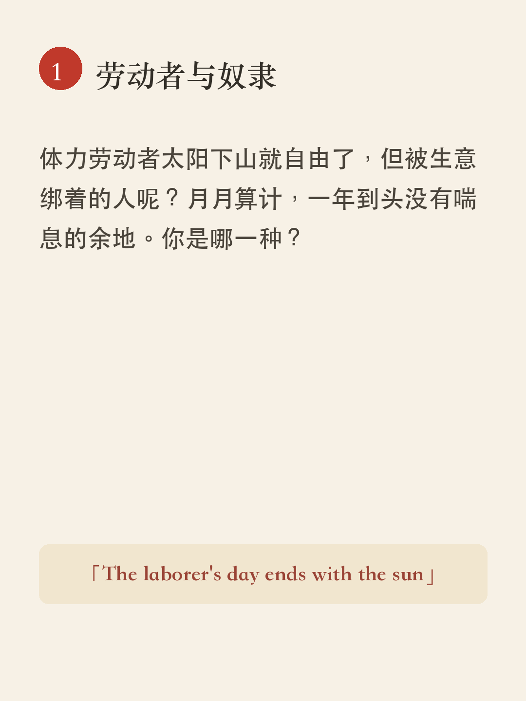
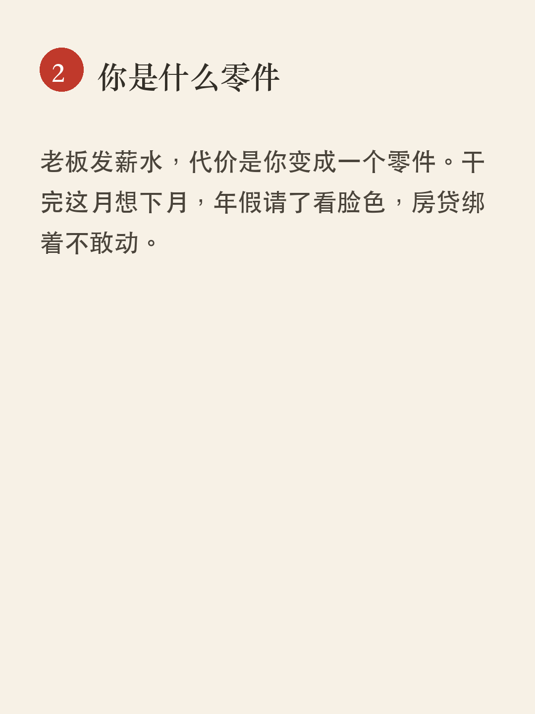
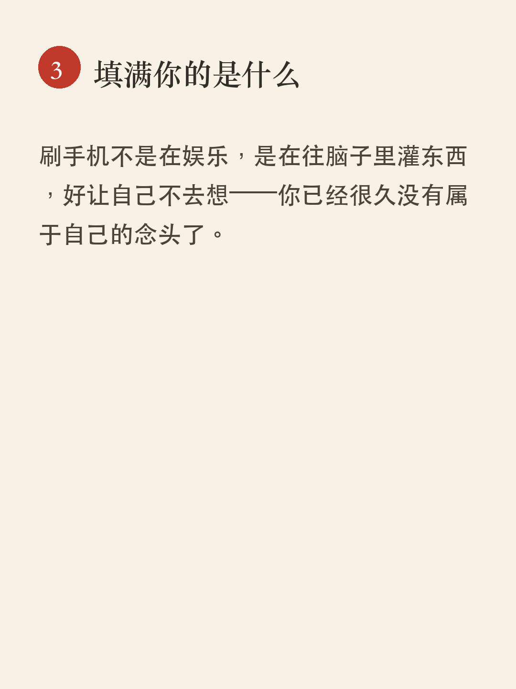
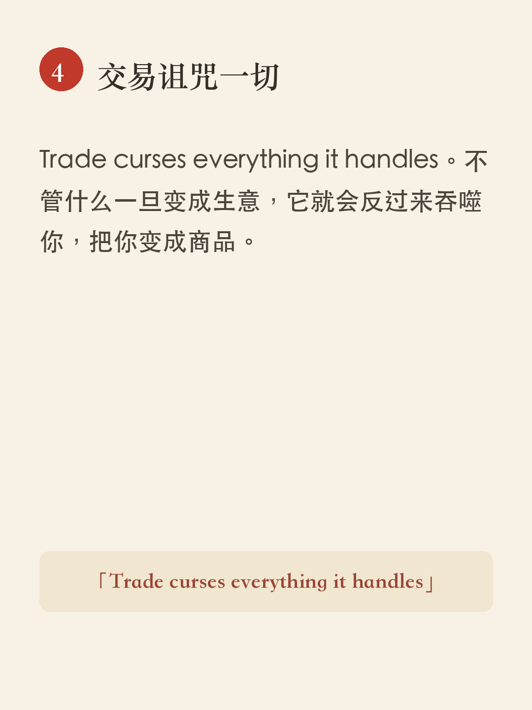
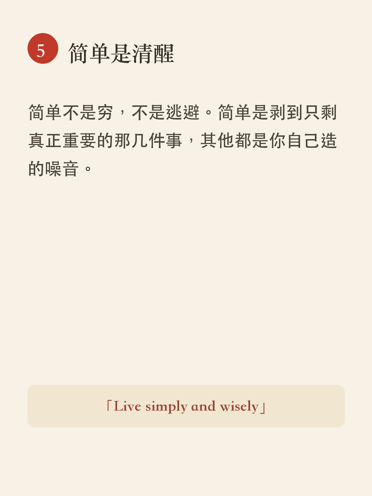
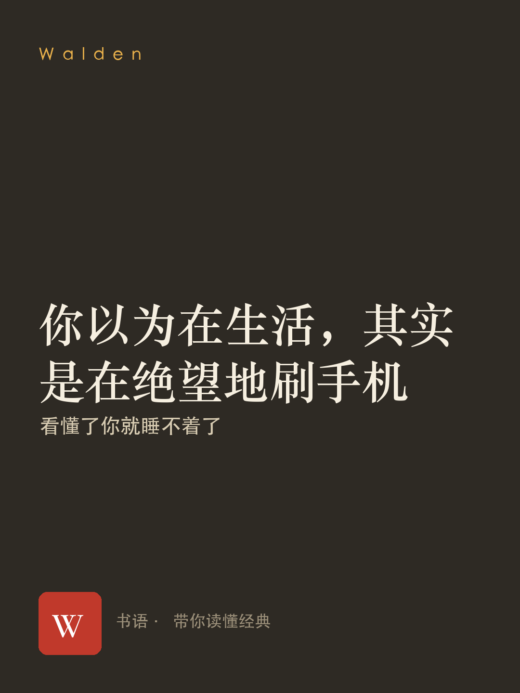
📄 配文·钩子（不剧透）
读完梭罗这段话，我破防了。
他说劳动者太阳下山就自由了，但今天你我是什么？干完这月想下月，年假请了看脸色，房贷绑着不敢动，手机随时被@，一秒空闲都要填满。
填满你的是刷手机。你不是在娱乐，你是在逃避——逃避去想那个问题：你到底想要什么。
梭罗说，活在世上本不该是苦差事，只要你活得简单、活得清醒。
简单不是搬到山里住，是把你自己剥到只剩真正重要的那几件事。
你今天，做了什么绝望的事吗？口播稿全文
有个人在湖边的小木屋里住着，他写道自己靠双手维生持续了五年多。他说生活本该是件容易的事，是我们自己把它搞成了苦刑。很多人会选择装作没听见，因为这话太难听了，听了你就没法再假装自己活得挺好了。
梭罗在书里写了这么一句——The laborer's day ends with the going down of the sun, and he is then free to devote himself to his chosen pursuit, independent of his labor; but his employer, who speculates from month to month, has no respite from one end of the year to the other。劳动者太阳一落就下班了，下班之后的时间属于自己；但他的雇主呢，月月都在算计，一年到头没有喘息的余地。
你读到这里会不会想，这说的不就是今天吗？他真正对比的是两种人——一种靠体力活了一天的人，太阳下山他就自由了；另一种被生意绑着的人，没有一刻能停下来。今天你我是什么人？老板给你发薪水，代价是你把自己变成一个零件，干完这个月想下个月，年假请了还要看脸色，房贷绑着你不敢动，手机随时可能被@，一秒的空闲都要赶紧填满不然就开始焦虑。
填满你的是什么东西？不是什么具体的爱好，不是你真正想做的事——是刷手机。随便刷什么都行，短视频、购物软件、社交媒体，你不是在娱乐，你是在往自己脑子里灌东西，好让自己不去想一件事：你已经很久没有一个真正属于自己的念头了。不是工作需要的念头，不是别人期待你有的念头，就是你自己想做的念头。你还记得那是什么感觉吗？
梭罗说了一句很重的话：Trade curses everything it handles。交易诅咒它触碰的每一样东西。你不管做什么，只要变成了一门生意，那门生意就会反过来吞噬你。你以为你在工作，本质上是你在出卖自己的一部分，那个部分本来可以用来搞清楚——我到底想成为什么样的人。但那个部分被市场定价了，被绩效评估了，你没空去想它，想了也没用。
他说得更透的一句话是这个：To maintain one's self on this earth is not a hardship but a pastime, if we will live simply and wisely。活在世上这件事，本来不该是苦差事，只要你活得简单、活得清醒。
简单不是穷，不是逃避，不是搬到山里去住。简单是什么？是你把自己的生活剥到只剩真正重要的那几件事，然后为那几件事花时间。其他的东西，都是你自己造的噪音。
他说得也很清楚：I would not have any one adopt my mode of living on any account。没人要学他那个具体的活法。他的意思不是让你辞职去隐居，也不是让你不玩手机。他的意思是，你先停一下，问自己一个问题——我现在这个活法，是我主动选的，还是我默认接受然后一直没动过？
……as the pursuits of the simpler nations are still the sports of the more artificial。只要你愿意活得简单、活得清醒。
你今天，做了什么绝望的事吗？
74旧版洞见scene公版✓ 判官过审只有迷路，才能找到自己——梭罗说的
🎬 梭罗说了一句比尼采早几十年的话：只有当我们迷失了世界，才开始找到自己。
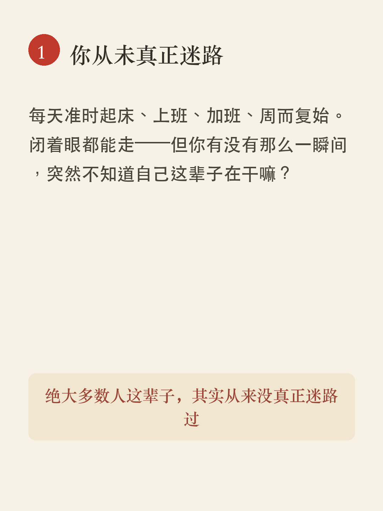
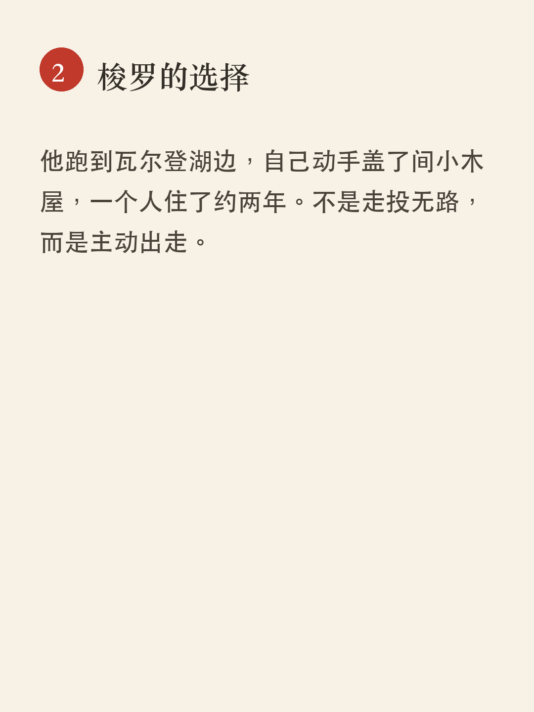
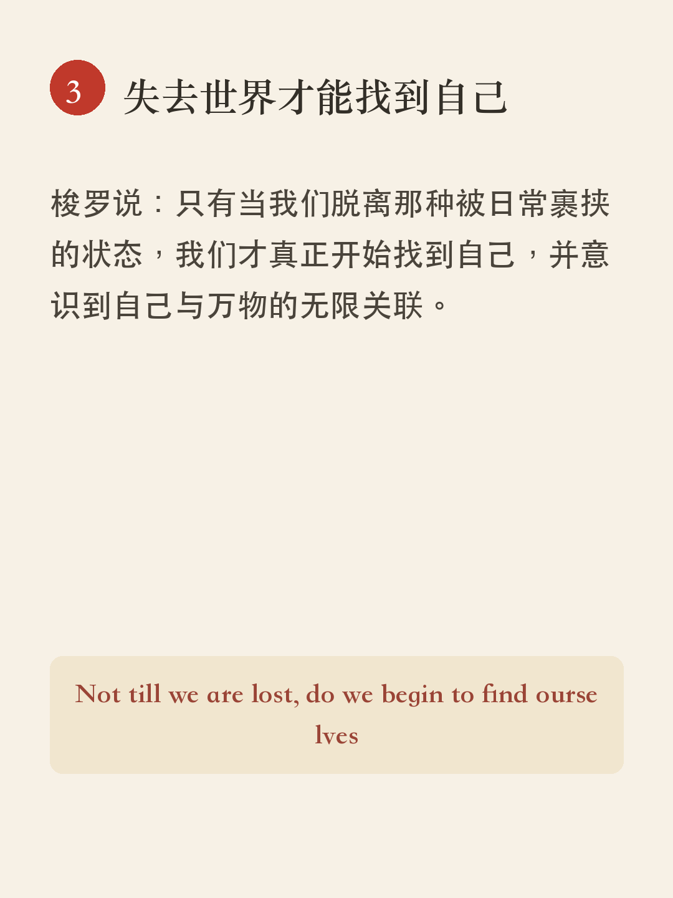
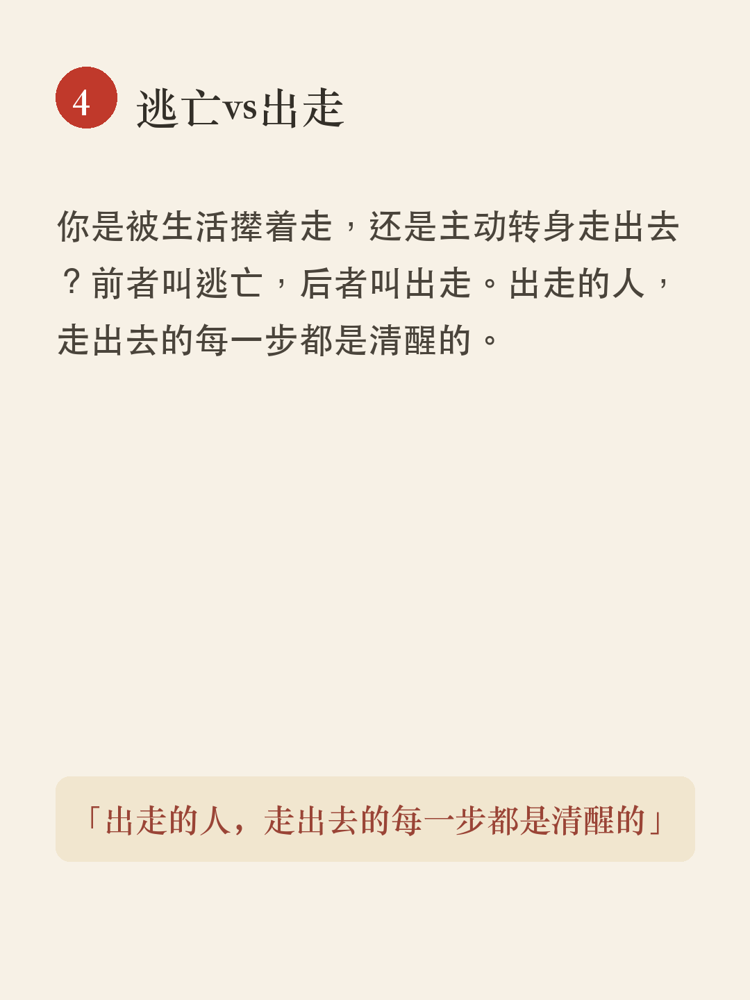
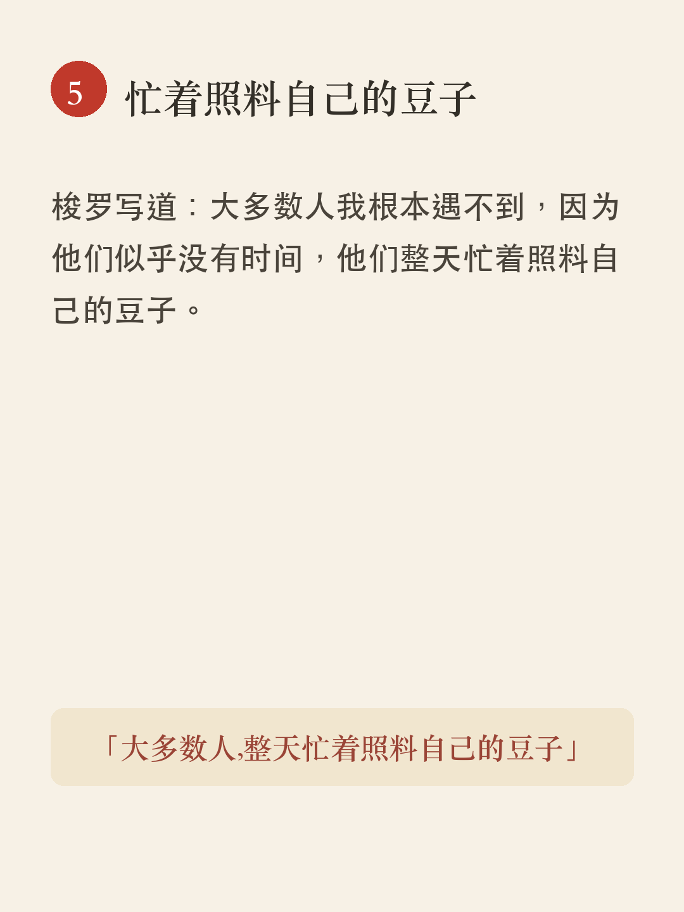
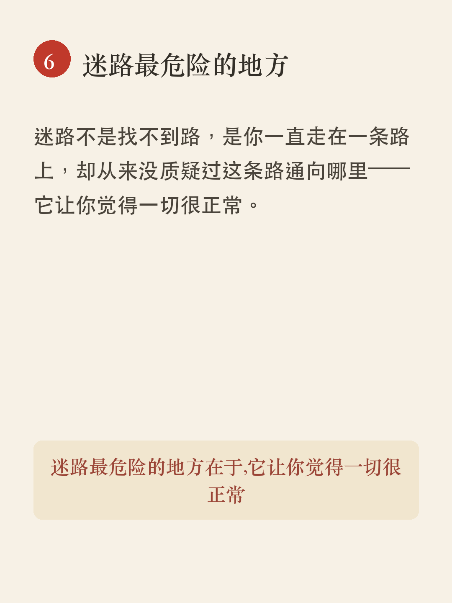
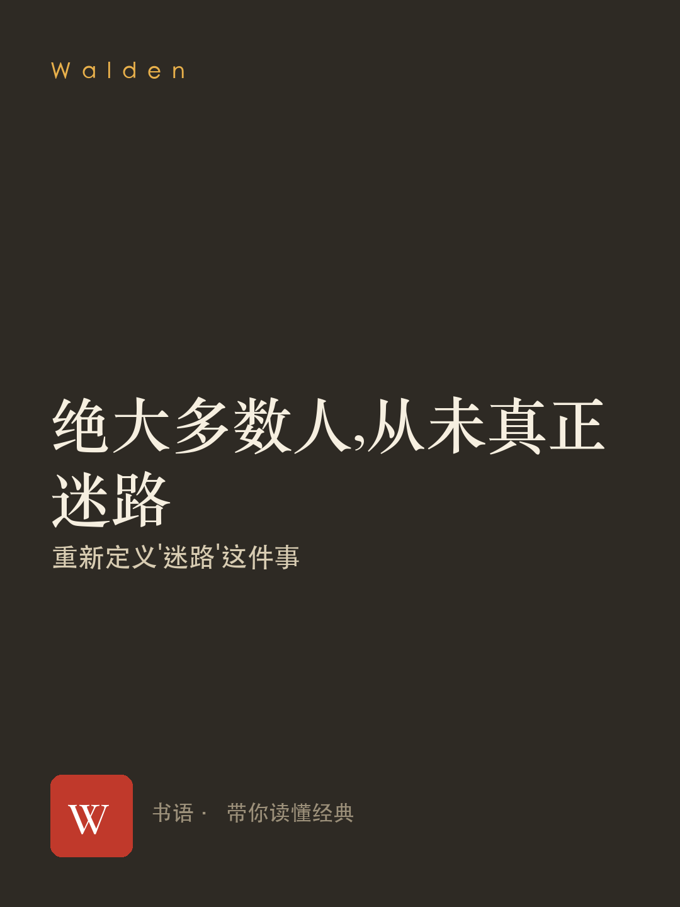
📄 配文·钩子（不剧透）
绝大多数人这辈子，其实从来没真正“迷路”过。
每天准时起床，上班，加班，回家。周而复始。路你熟得很，闭着眼都能走。但你有没有那么一瞬间，突然不知道自己这辈子在干嘛？
梭罗在《瓦尔登湖》里说了句扎心的话——只有当我们失去这个世界，我们才真正开始找到自己。
这话听起来是悖论，但它戳破了一个真相：什么才是真正的迷路？不是导航断了信号，是你每天走得明明白白，却从来没问过自己要去哪。
梭罗搬进森林，不是走投无路，是主动选择了一英里的距离——跟那个让你麻木的日常之间的距离。
迷路不是终点。迷路只是你找到方向的方式。而迷路最危险的地方在于——它让你觉得一切很正常。口播稿全文
绝大多数人这辈子，其实从来没真正“迷路”过。
你每天准时起床，上班，加班，回家。周而复始。路你熟得很，公司在哪，地铁怎么换，小区门口哪个摊卖什么——闭着眼都能走。
但你有没有那么一瞬间，突然不知道自己这辈子在干嘛？
梭罗在《瓦尔登湖》里干了一件让不少人觉得好奇的事：他跑到康科德郊外的瓦尔登湖边，自己动手盖了间小木屋，一个人住了约两年多。有人不解——这人是不是混不下去了？是不是在逃避生活？
梭罗听完只是笑笑。他说了一句话，这句话你要是听进去了，能颠覆你对“迷路”这件事的认知：
Not till we are lost, in other words not till we have lost the world, do we begin to find ourselves, and realize where we are and the infinite extent of our relations.
翻译过来就是：只有当我们失去这个世界——也就是脱离那种被日常裹挟的状态——我们才真正开始找到自己，并意识到自己身在何处、以及我们与万物的无限关联。
这话乍一听是悖论，但它戳破了一个扎心的真相——什么才是真正的迷路？不是你导航断了信号，是你每天走得明明白白，却从来没问过自己要去哪。
梭罗搬进森林，不是走投无路，不是被生活撵出去的。他在书里写，自己独自住在林子里，离最近的邻居约一英里，住在自己亲手盖的房子里。他选择了一英里的距离。是什么距离？是跟那个让你麻木的日常之间的距离。这才是关键——你是被生活撵着走，还是你主动转身走出去？这两件事看起来都是在走，但它们本质上是两回事。前者叫逃亡，后者叫出走。出走的人，走出去的每一步都是清醒的。
梭罗在瓦尔登湖畔的两年，让他获得了一种少有人主动追求的东西——退一步的视角。他从外面回头看自己以前的生活，发现他原来以为的那些必需品，有一大半是习惯，还有一小半是恐惧。他看清楚了“大多数人”是怎么过的。原文里他写道：Most men I do not meet at all, for they seem not to have time; they are busy about their beans——大多数人我根本遇不到，因为他们似乎没有时间，他们整天忙着照料自己的豆子。就是那种日复一日、停不下来的状态。
所以梭罗那句话厉害在哪？它让我们重新思考什么是“迷路”。迷路不是找不到路，迷路是你一直走在一条路上，却从来没有质疑过这条路通向哪里——这是当代解读，而梭罗本人的体验是，他在瓦尔登湖边的林子里迷路、转向、失去方向感的时候，反而开始真正认识自己。
离开瓦尔登湖后多年，梭罗把这段经历整理成书，1854年正式出版为《瓦尔登湖》。他没有劝你也去隐居。他的意思是：你至少得给自己一个机会，停下来，离开那条一直在走的路，看清楚你真正想去的地方是哪里。
迷路不是终点。迷路只是你找到方向的方式。而迷路最危险的地方在于——它让你觉得一切很正常。
68旧版映照scene公版✓ 判官过审你说你孤独？我看你只是害怕独处
🎬 梭罗说：我从来没有找到比孤独更忠实的伴侣。
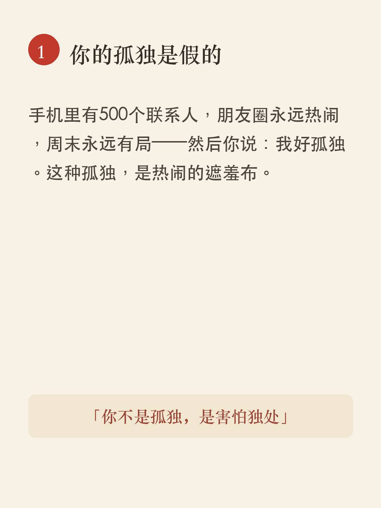
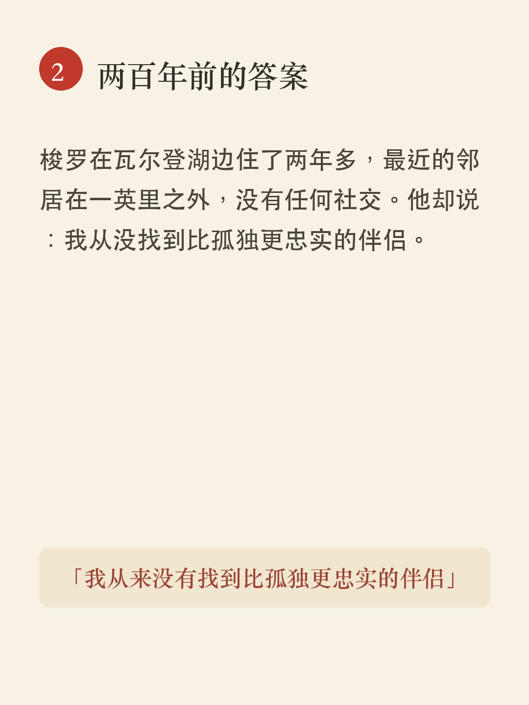
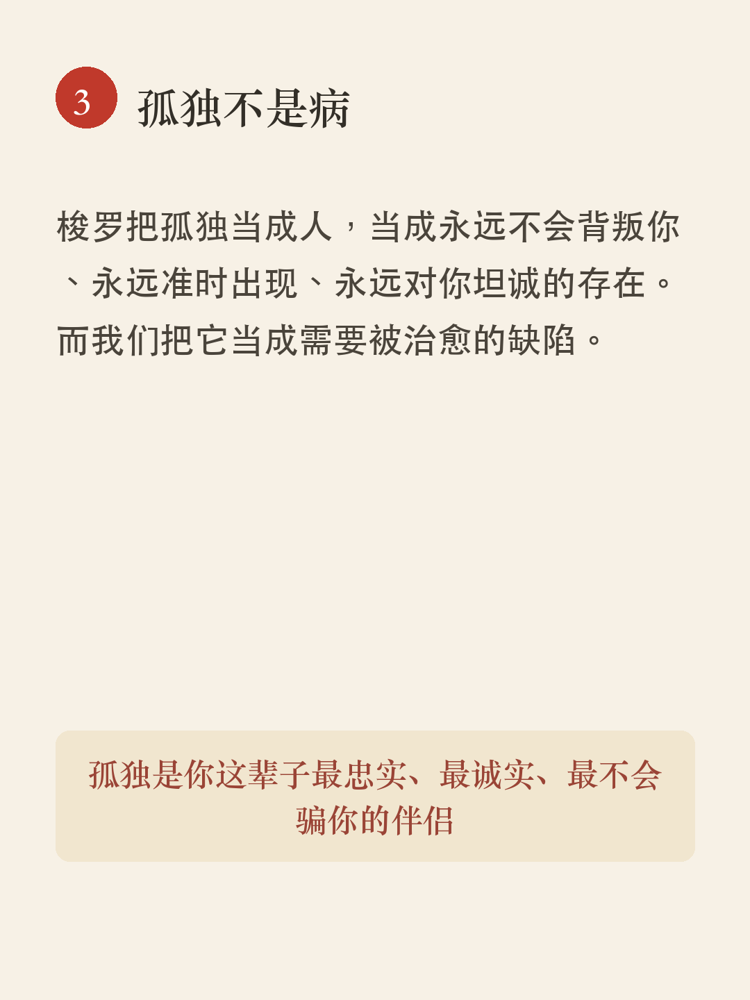
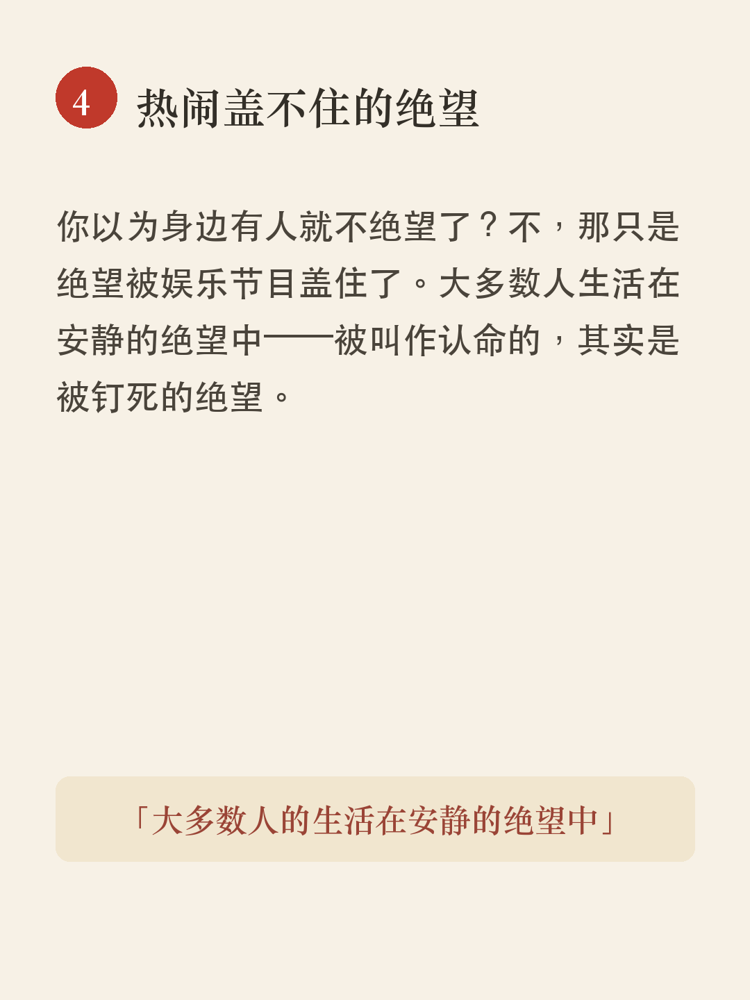
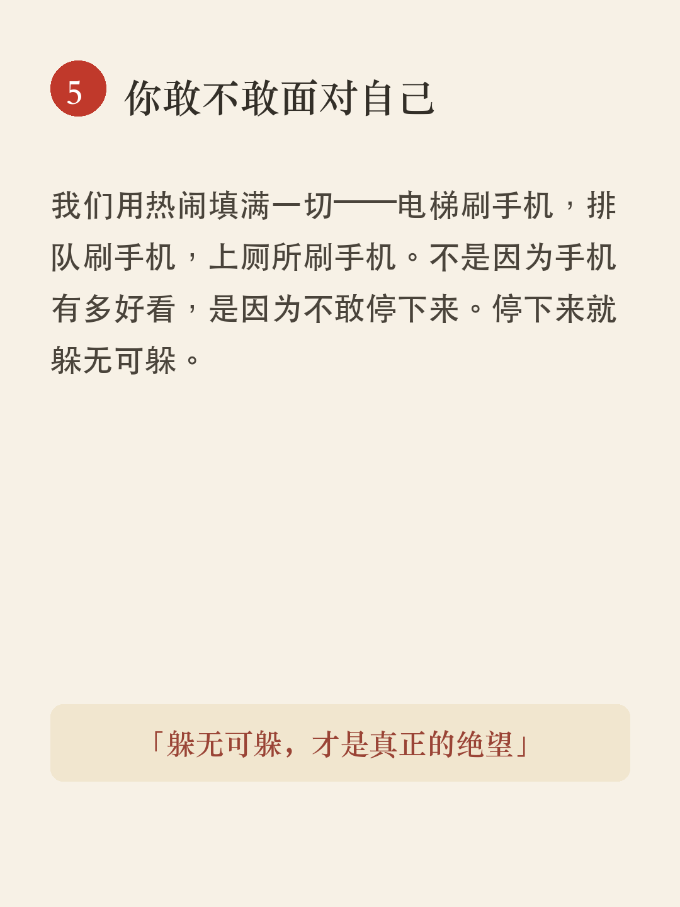
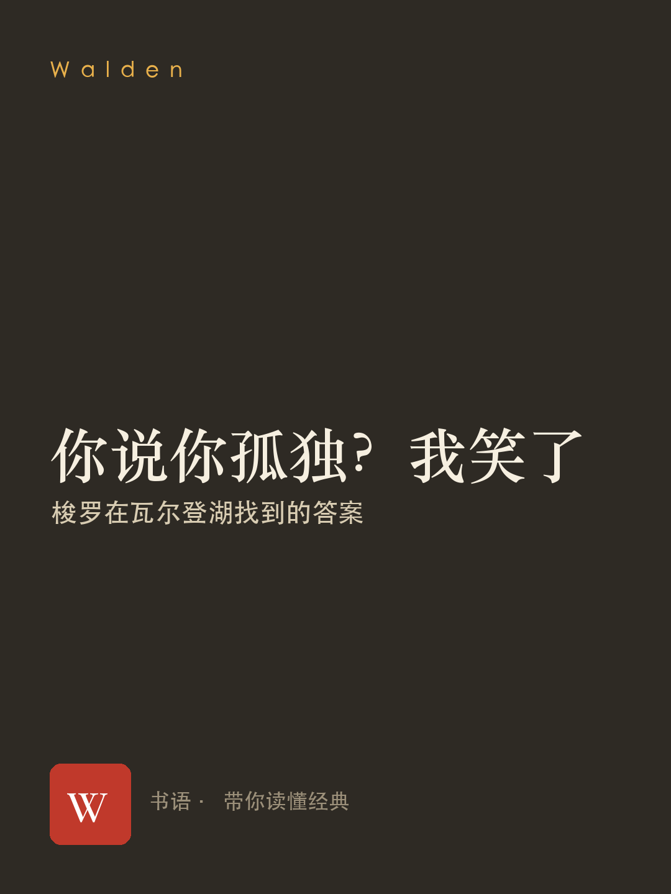
📄 配文·钩子（不剧透）
说「我好孤独」的人，往往手机里有500个联系人。
而梭罗住在瓦尔登湖边，一英里内没有邻居，没有社交，没有应酬——他却说从没找到比孤独更忠实的伴侣。
他把孤独当成人，而我们把它当病。
你以为身边有人就不绝望？梭罗说：大多数人的生活在安静的绝望中。那种被叫作认命的，其实是被钉死的绝望。
问题从来不是「有没有人陪」，是你敢不敢跟自己待一会儿。
下次觉得孤独，别急着找人陪。先问：我有多久没一个人安静地待着了？口播稿全文
你说你孤独？
我听见这句话就想笑。不是嘲笑，是苦笑。因为说这话的人，往往手机里有几百个联系人，朋友圈永远热闹，周末永远有局——可他们说：我好孤独。
而两百年前，有个人住在湖边的小木屋里，最近的邻居在一英里之外，没有任何社交软件，没有任何应酬。他却说了一句让我愣在原地的话：
"I never found the companion that was so companionable as solitude."
翻译过来就是：我从来没有找到比孤独更忠实的伴侣。
这个人是梭罗。这句话出自《瓦尔登湖》的"孤独"一章。
你发现没有？他说的是"伴侣"，不是"状态"。他把孤独当成人，当成那个永远不会背叛你、永远准时出现、永远对你坦诚相见的存在。
但我们怎么理解孤独的？我们把它当成一种病，一种需要被治愈的缺陷。我们害怕独处，害怕手机没响，害怕一个人吃饭，所以我们拼命填满每一秒——刷视频、约饭局、凑热闹，好像只要身边有人，就不叫孤独了。
梭罗怎么说的？他说：大多数人的生活在安静的绝望中。What is called resignation is confirmed desperation. 那种被叫作"认命"的，其实是被钉死的绝望。
你以为你身边有人就不绝望了？不，那只是绝望被娱乐节目盖住了。
他住在湖边两年多，有人问他：你一个人住不寂寞吗？他说：我从来没有找到比孤独更忠实的伴侣。
你听懂这句话了吗？
他不是找不到人，他是找不到比孤独更懂他的东西。人会离开，会敷衍，会心不在焉。但孤独不会。孤独永远在那里等你，等你卸下面具，等你不用表演，等你终于听见自己心里那点真实的声音。
所以问题根本不是"你有没有人陪"。
问题是：你有没有勇气跟自己待一会儿？
我们这代人最擅长的是用热闹填满一切——电梯里刷手机，排队刷手机，上厕所刷手机。不是因为手机有多好看，是因为我们不敢停下来。停下来就面对自己，面对那个可能连自己都不认识的人。
梭罗在书里写：The mass of men lead lives of quiet desperation. 大多数人生活在安静的绝望中。
这句话两百年了，一点没过时。
你说你孤独？我看你不是孤独，你是害怕独处。你害怕那个没有噪音、没有人群、没有借口的空间。因为在那里，你躲无可躲。
而真正的问题不是独处本身，是你跟自己相处的时候，听不见自己真正想要什么。
所以下次你觉得孤独的时候，别急着找人陪。先问问自己：我有多久没有一个人安静地待着了？我有没有认真听过自己心里在想什么？
孤独不是你的敌人。
它是你这辈子最忠实、最诚实、最不会骗你的伴侣。问题只是你敢不敢接受它。